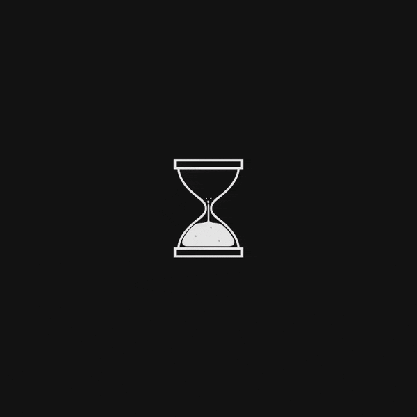
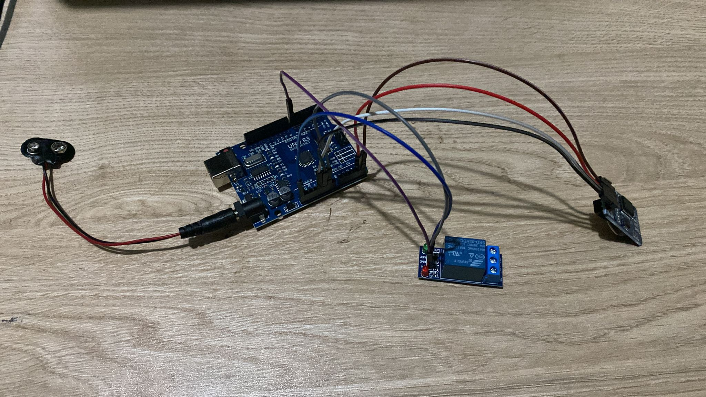
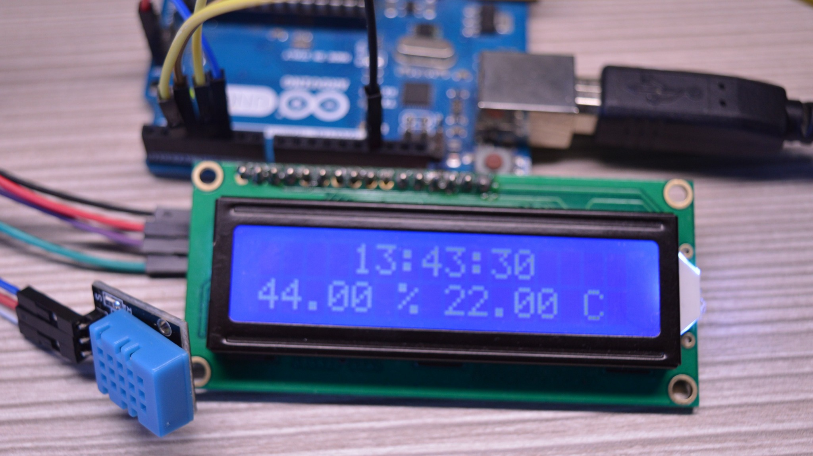

Projeler
 Devam Ediyor
Devam Ediyor
MekaKart
2028Yükleniyor...
Raspberry Pi
Arduino
Python
C++
OpenCV
PID
CAD
İlerleme
0%

Devam EdiyorÇizgi İzleyen Robot
2026Yükleniyor...
Arduino
Kızılötesi Sensörler
Kontrol Sistemleri
Robotik
İlerleme
20%

TamamlandıOtomatik Sera Sulama Sistemi
2025Arduino kullanan otomatik bir sera sulama sistemi, 9V pil ile çalışan RTC ve röle aracılığıyla zamanlanmış sulama kontrolüne sahiptir.
Arduino
RTC Modülü
Röle Modülü
9V Pil

TamamlandıHava İstasyonu
2025Sıcaklık, nem, basınç ve hava kalitesine ilişkin gerçek zamanlı veri toplama özelliğine sahip, Arduino kullanan gelişmiş bir hava durumu izleme sistemi.
Arduino
DHT22
BMP280
MQ135
Veri Kaydı